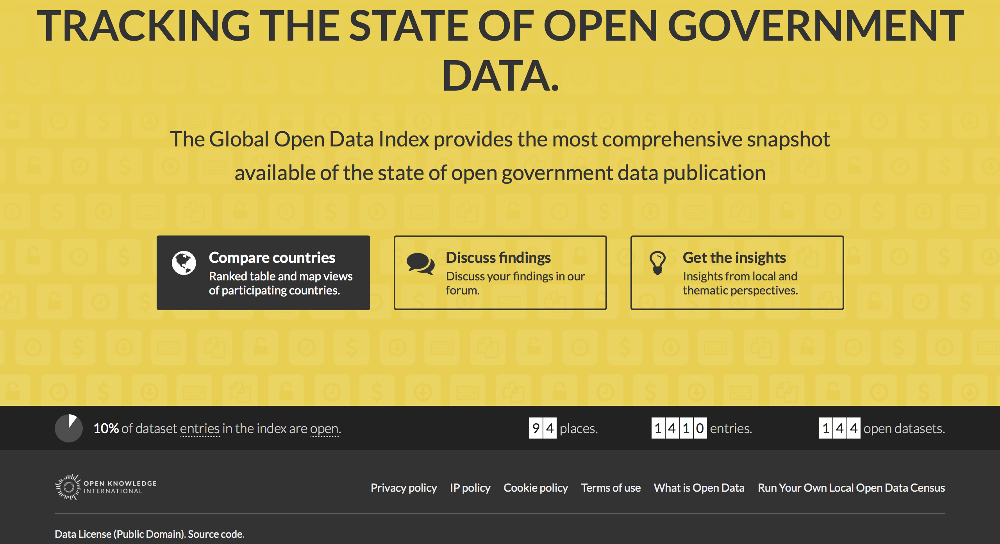

Open Data and the Question of Quality
Open Knowledge International
Open up all essential, public interest information and see it used to create insight that drives positive change.
This talk
- The open data ecosystem is almost exclusively about publication
- This focus on publication is now minimising the impact of open data
- To meet the promise of open data, we need to focus on data quality
- Some ideas to think about technology of "what's next" (because most of us here are technologists)
- Some concrete actions you can take in front of your local public bodies that publish open data
Definitions
Open data is digital data that is made available with the technical and legal characteristics necessary for it to be freely used, reused, and redistributed by anyone, anytime, anywhere. Open Data Charter
Is it important?
- It's our data
- A type of accountability
- New types of participatory cultures
- Insight -> change in the world
Where are we now?
Field
- Freedom of Information (FOI)
- Publication and the open data portal
- Transparency initiatives and open data
- Meta-national partnerships and alliances
Actors
- NGOs
- Civic tech
- Governments
- Philanthropists
Metrics / Incentives

Metrics / Incentives
Metrics / Incentives
Metrics / Incentives
What we don't see
- We don't measure the usability of open data
- We don't expect open data to be of high quality
- We don't incentivise government to strive for impact (reuse, insight, change)
Studies
- Who are the users of open data?
- What are their user experiences?
- What can we learn about data quality?
UK spend data
- A global leader in open data publication
- A case with a clear edict of requirements
- A simple and explicit "standard" to publish to
- % of valid files rounds to zero
- Issues of file structure and schema
- Issues of timeliness (or, discoverability - take your pick)
EU subsidy data
- Clear publication requirements via an EU regulation
- Centralised entiy (EU) paying out across multiple regions (comparability opportunity)
- Huge investments by EU in open data and related tech (H2020 and similar programs)
Others
When released, data is not always useful and useable…. Only France published the majority of its datasets in line with open data standards. - from Open Data: Promise but not enough progress by Transparency International
… cities … put out more data with lower usability (because metadata isn’t available, or is of poor quality) … [and] … undermine cities’ ability to deliver on open data’s transparency-driven mission. - from An Open Letter to the Open Data Community by Data Smart City Solutions
… we recommend that … data quality is increased to the legally mandated minimum throughout Europe. … governments should introduce centralised control mechanisms and penalties for non-compliance. - from Towards more transparent and efficient contracting by Digiwhist
Learnings
- Governments leading on open data cannot publish consistent CSV files
- Standards and regulations do not lead to quality, reusable data
- Huge amounts of time and money are required to get to insight
Quality
What do we want?
(W)e want the data raw, and we want the data now - from Give Us the Data Raw, and Give it to Us Now by Rufus Pollock
Goals
- plain text data
- structural integrity
- schematic consistency
- timely release
Non-goals
- Fixed data standards
- Common code lists
- Automated comparision
- Linkage across datasets
xkcd.com/1831/

Action
What can we do to get governments to publish quality open data?
Non-tech
- Engage in direct dialogue with government on the usability of open data
- Build quality metrics into the processes that incentivise government
- In some situations, outright reject data as open data based on quality grounds alone
Tech
Data validation
- Structural and schematic checks
- Semantic and checks
- Reports actionable by non-technical users
- goodtables and Data Quality Spec
Quality dashboards
- Log data quality over collections of data
- Track change over time
- Target actors in policy and implementation
- Data Quality Dashboard
Future portals
- More emphasis on publication workflows
- More emphasise on internal visibility into "data health"
- Automation/controls around publishing based on health checks